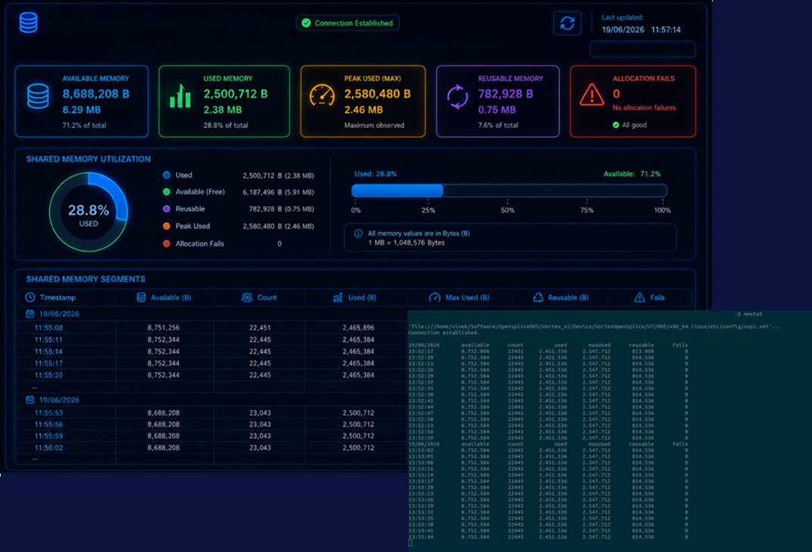

Tools
Shared Memory Monitoring Tool
← BackOpensplice DDS provides mechanisms to monitor and analyse the shared memory database used in Federated deployment mode. Effective monitoring helps designers, testers and system administrators to calculate, dimension and track memory consumption.
It helps identifying resource bottlenecks and ensures sufficient shared memory remains available for DDS applications and middleware services by providing real-time statistics on shared memory utilization, data object allocation, and overall in-memory database health.
Key Features
- Monitor total, used, and available shared memory
- Display current and peak memory utilization
- Track memory allocation and release trends
- Analyse memory growth using differential statistics
- Identify object types consuming shared memory
- Monitor reusable and fragmented memory
- Support periodic sampling for long-term observation
- Assist in database sizing and capacity planning
- Detect abnormal memory growth and resource leaks
- Help verify shared memory watermark thresholds
- Lightweight command-line tool suitable for diagnostic monitoring
- Available for Opensplice DDS Federated shared memory deployments only
- Monitor process attachment and detachment events within the shared memory database
